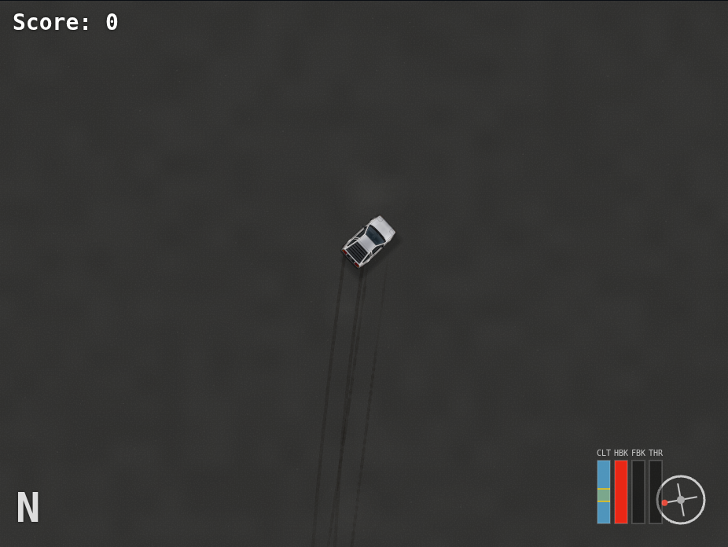
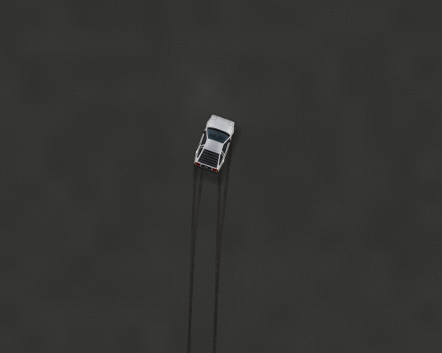

Recorded from the actual simulator at the default dust settings. Resting motes are faint; the car disturbs their motion and leaves a settling wake. Larger haze patches appear only in disturbed air. Each off/on pair has the same vehicle state and simulation time.

Left: disabled. Right: enabled. Use the slider or toggle to compare; the scene and road texture remain identical.

A one-second simulation slice, sampled at approximately 12 frames/s for review. Wind, body flow and retained wake move the motes. This playback rate is not a performance benchmark.